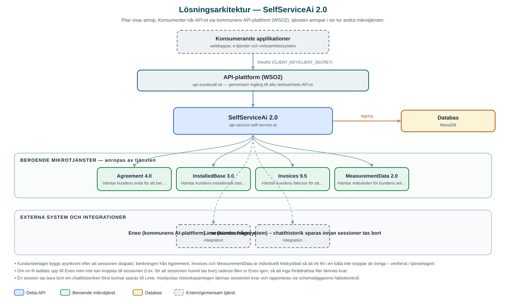

SelfServiceAi
Driver en AI-assistent för kundservice i självbetjäningskanaler – assistenten laddas med kundens avtal, fakturor och mätvärden och kan sedan svara på frågor om kundens engagemang.
Om API:et
SelfServiceAi gör det möjligt för kommunkoncernens självbetjäningskanaler att erbjuda en AI-assistent som kan svara på frågor om kundens egna engagemang. När en session skapas hämtar tjänsten kundens installerade bas (abonnemang och anläggningar) och berikar den med avtal, fakturor och mätdata från kommunens övriga API:er.
Det sammanställda kundunderlaget laddas upp som en fil till AI-plattformen Eneo och kopplas till assistentsessionen. Uppladdningen sker asynkront – anroparen kan följa initieringen via en statusresurs (PENDING/READY/FAILED) och börjar ställa frågor när sessionen är klar. Frågor och följdfrågor besvaras av Eneo-assistenten med kundunderlaget som kontext.
Sessioner städas löpande: när en session avslutas, eller när ett schemalagt jobb hittar inaktiva sessioner, sparas chatthistoriken till kundservicesystemet Lime innan sessionen och de uppladdade filerna tas bort från Eneo.
Det här gör API:et
- Assistentsessioner – Skapar en session hos AI-plattformen Eneo för en angiven kund (partyId) och håller ordning på sessionens tillstånd.
- Automatiskt kundunderlag – Hämtar kundens installerade bas och berikar den med avtal, fakturor och mätdata; underlaget laddas upp till Eneo som kontext för assistenten.
- Frågor och följdfrågor – Vidarebefordrar kundens frågor till Eneo-assistenten med sessionens filer som kunskapsunderlag.
- Initieringsstatus – Statusresurs som visar om sessionen är under uppbyggnad, klar eller misslyckad, eftersom underlaget byggs asynkront.
- Chatthistorik till Lime – Innan en session tas bort sparas hela chatthistoriken till kundservicesystemet Lime.
- Automatisk städning – Ett schemalagt jobb tar bort sessioner som varit inaktiva längre än en konfigurerbar tröskel (standard 60 minuter) inklusive uppladdade filer.
API-dokumentation
API:ets samtliga resurser, parametrar och datamodeller finns beskrivna i en OpenAPI-specifikation som är hämtad ur källkodsförrådet. Den kan utforskas interaktivt i Swagger UI eller laddas ner som YAML. Programvaruförteckningen (SBOM) listar tjänstens samtliga tredjepartskomponenter med version och licens.
Teknisk dokumentation
Nedan beskrivs hur tjänsten är uppbyggd, vilka andra tjänster den anropar och vad som krävs för att driftsätta den. Informationen är härledd ur källkoden och dess konfiguration på GitHub.
Arkitektur

API:et är en mikrotjänst (Java 25, Spring Boot via kommunens gemensamma tjänsteplattform dept44 (8.0.8), byggd med Maven). Konsumenter når tjänsten via kommunens gemensamma API-plattform (WSO2) på api.sundsvall.se – tjänsten anropas aldrig direkt. Tjänsten anropar i sin tur andra mikrotjänster i kommunens tjänstelandskap. Lagring: MariaDB med Flyway-migrationer; sessioner, kopplade filer och historik lagras för statusuppföljning och städning. Övriga integrationer som förekommer i koden: Eneo (kommunens AI-plattform) – sessioner, frågor och filuppladdning, Lime (kundservicesystem) – chatthistorik sparas innan sessioner tas bort.
Teknikstack
- Språk: Java 25
- Ramverk: Spring Boot via kommunens gemensamma tjänsteplattform dept44 (8.0.8), byggd med Maven
- Databas: MariaDB med Flyway-migrationer; sessioner, kopplade filer och historik lagras för statusuppföljning och städning
- Övrigt: Resilience4j (circuit breakers mot samtliga integrationer), dept44-scheduler med ShedLock för schemalagd sessionstädning, asynkron initiering med @Async
Beroenden till andra mikrotjänster
Tjänsten anropar följande mikrotjänster. Versionerna är hämtade ur källkodens integrationsklienter.
| Tjänst | Version | Användning |
|---|---|---|
| Agreement | 4.0 | Hämtar kundens avtal för att berika kundunderlaget. |
| InstalledBase | 3.0 | Hämtar kundens installerade bas – grunden i det underlag som laddas upp till assistenten. |
| Invoices | 9.5 | Hämtar kundens fakturor för att berika kundunderlaget. |
| MeasurementData | 2.0 | Hämtar mätvärden för kundens anläggningar. |
Programvaruförteckning
Tjänsten bygger på 262 tredjepartskomponenter fördelade på 14 olika licenser. Till skillnad från tabellen ovan, som listar andra mikrotjänster, avses här de programbibliotek som ingår i bygget. Se programvaruförteckningen för hela listan.
Konfiguration och driftsättning
- application.yml med URL och OAuth2-klientuppgifter (client_credentials) för Eneo, Agreement, InstalledBase, Invoices, Lime och MeasurementData
- Eneo-assistentens id (assistant-id) samt organisationsnummer för fakturauppslag konfigureras per miljö
- Schemaläggning av sessionstädning: cron, inaktivitetströskel och ShedLock-låstider
- MariaDB-anslutning; databasschemat versionshanteras med Flyway
- Anrop görs per kommun – municipalityId ingår i alla API-vägar
Noterbart ur källkoden
- Kundunderlaget byggs asynkront efter att sessionen skapats; berikningen från Agreement, Invoices och MeasurementData är individuellt felskyddad så att ett fel i en källa inte stoppar de övriga – verifierat i tjänstelagret.
- Om en fil laddats upp till Eneo men inte kan kopplas till sessionen (t.ex. för att sessionen hunnit tas bort) raderas filen ur Eneo igen, så att inga föräldralösa filer lämnas kvar.
- En session tas bara bort om chatthistoriken först kunnat sparas till Lime; misslyckas historiksparningen lämnas sessionen kvar och rapporteras via schemaläggarens hälsokontroll.
- Utan träff i installerad bas markeras sessionen som misslyckad med förklarande status i stället för att assistenten startas utan underlag.
Källkod
Källkoden är öppen och finns hos Sundsvalls kommun på GitHub. I källkodsförrådet finns även instruktioner för att klona, konfigurera och starta tjänsten i egen miljö.